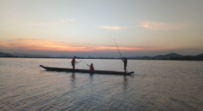

Tin liên quan
- Giới thiệu
- Thông tin chỉ đạo điều hành
- Văn bản pháp quy
- Quy hoạch - Kế hoạch
- Công khai ngân sách
- Chương trình, Dự án
Giới thiệu
Khai mạc Kỳ họp bất thường, Quốc hội khóa XV,Hiệu quả công tác thu hút đầu tư ở tỉnh Đắk Lắk, Nghĩa tình quân dân. Hiệu quả kép trong điều trị bệnh nhân Covid-19 tại nhà. Hội doanh nhân trẻ tỉnh Đắk Lắk xây dựng giải pháp kết nối giao thương. Nhiều giải pháp đảm bảo nguồn thu ngân sách trong năm 2022
Follow Me


Ngày 17/10/2019, UBND tỉnh ban hành Quyết định số 3045/QĐ-UBND về việc xếp hạng di tích cấp tỉnh đối với Danh lam thắng cảnh thác Buôn H’Ngô, xã Hòa Phong, huyện Krông Bông, tỉnh Đắk Lắk.
-Nhiều năm qua, đội chiêng nữ ở Thị trấn Buôn Trấp, huyện Krông Ana, tỉnh Đắk Lắk vẫn đam mê lưu giữ nét văn hóa độc đáo của dàn chiêng Jhô và truyền dạy đến bao thế hệ. Đây là đội chiêng nữ độc đáo và duy nhất của người dân tộc Ê đê Bih ở Tây Nguyên.

Thuyền độc mộc là một loại thuyền truyền thống có lịch sử từ lâu đời của người M’nông R’lâm, tại huyện Lắk. Cho đến nay, thuyền độc mộc vẫn được người dân nơi đây sử dụng rất phổ biến như một vật dụng không thể thiếu của gia đình.
Nhiều năm qua, đội chiêng nữ ở Thị trấn Buôn Trấp, huyện Krông Ana, tỉnh Đắk Lắk vẫn đam mê lưu giữ nét văn hóa độc đáo của dàn chiêng Jhô và truyền dạy đến bao thế hệ.
Thông tin cần biết
- Giới thiệu
- Thông tin chỉ đạo điều hành
- Văn bản pháp quy
- Quy hoạch - Kế hoạch
- Công khai ngân sách
- Chương trình, Dự án